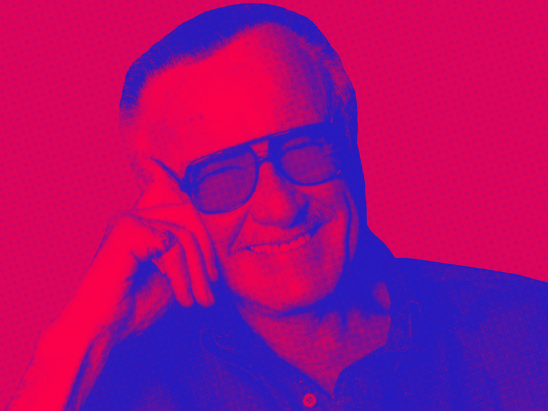

STAN LEE
"EXCELSIOR!"
A MODERN "MARVEL"
DECEMBER 28, 1922 - Born in Manhattan, New York to Celia and Jack Lieber.
1939 - Stan graduates from high school early in 1939, and joined the WPA Federal Theatre Project.
1939 - Through family connections, Stan soon gets a job as an assistant at Timely Comics.
1941 - At Timely Comics, Stan meets Joe Simon and Jack Kirby, the creators of Captain America.
1941 - Stan is appointed interim editor after Simon and Kirby leave Timely Comics.
1942-1945 - Stan serves in the Army during WWII, writing manuals and scripts for training films as part of the Signal Corps. He is one of only nine people in the Army listed as a "playwright."
1946 - Stan returns to Timely Comics
1947 - Stan meets Joan Boocock, a hat model, and after two weeks proposes to her. The two begin their 70-year marriage.
NOVEMBER 1951 - Timely Comics turns into Atlas Comics. At this time Stan, is writing stories in a variety of genres including romance, Westerns, humor, science fiction, medieval adventure, horror and suspense.
1956 - Stan considers quiting the comic book industry.
MARCH 1960 - The Justice League of America is created by DC Comics.
JUNE 1961 - Marvel Comics is created and Lee is assigned to come up with a new superhero team. Lee's wife suggested that he experiment with stories he preferred, since he was planning on changing careers and had nothing to lose.
NOVEMBER 1961 - Stan and Jack Kirby create the Fantastic Four.
1961 - Stan and Kirby create the "Marvel Method", the artist (Kirby) would work from a story synopsis from the writer (Lee), rather than a full script. The artist creates page-by-page plot details on his or her own, after which the work is returned to the writer for the insertion of dialogue.
MAY 1962 - Stan and Kirby create The Hulk.
AUGUST 1962 - Stan and Kirby create Thor.
AUGUST 1962 - Stan and Steve Ditko create Spider-man. Marvel's most successful character.
MARCH 1963 - Stan and Kirby create Iron Man.
JULY 1963 - Stan and Steve Ditko create Doctor Strange.
SEPTEMBER 1963 - Stan and Kirby Create the X-Men.
SEPTEMBER 1963 - Stan and Kirby Create the Avengers, The original team consists of Iron Man, The Hulk, Thor, Ant-Man, and The Wasp.
JULY 1963 - Stan and Kirby create Black Panther, mainstream comic's first African superhero.
1971 -The U. S. Department of Health, Education and Welfare asks Stan to write a comic-book story about the dangers of drugs and Lee conceived a three-issue subplot in The Amazing Spider-Man #96–98 (cover-dated May–July 1971), in which Peter Parker's best friend becomes addicted to prescription drugs. The comics sold well and Marvel won praise for its socially conscious efforts.
1972 - Stan becomes Publisher of Marvel Comics.
1981 - Stan moves to California to develop Marvel's TV and Movie Properties.
1989 - Stan makes his first of MANY cameos in the TV-movie The Trial of the Incredible Hulk.
2001 - Starts POW! Entertainment, a company that develops movies and television shows centered on new superheroes.
2002 - After receiving no royalties from the first "Spider-Man" movie, Stan files a lawsuit against Marvel.
2005 - Reaches a $10 million settlement with Marvel.
2005 - President George W. Bush presents Stan with the American National Medal of the Arts.
MAY 2008 - The Marvel Cinematic Universe is created with it's first film, Iron Man. Stan made his trademark cameo in the film and all the subsequent films
JULY 2017 - Joan dies of complications from a stroke. She was 95 years old
NOVEMBER 12, 2018 - Stan dies of pneumonia at 95 years old
1939 - Stan graduates from high school early in 1939, and joined the WPA Federal Theatre Project.
1939 - Through family connections, Stan soon gets a job as an assistant at Timely Comics.
1941 - At Timely Comics, Stan meets Joe Simon and Jack Kirby, the creators of Captain America.
1941 - Stan is appointed interim editor after Simon and Kirby leave Timely Comics.
1942-1945 - Stan serves in the Army during WWII, writing manuals and scripts for training films as part of the Signal Corps. He is one of only nine people in the Army listed as a "playwright."
1946 - Stan returns to Timely Comics
1947 - Stan meets Joan Boocock, a hat model, and after two weeks proposes to her. The two begin their 70-year marriage.
NOVEMBER 1951 - Timely Comics turns into Atlas Comics. At this time Stan, is writing stories in a variety of genres including romance, Westerns, humor, science fiction, medieval adventure, horror and suspense.
1956 - Stan considers quiting the comic book industry.
MARCH 1960 - The Justice League of America is created by DC Comics.
JUNE 1961 - Marvel Comics is created and Lee is assigned to come up with a new superhero team. Lee's wife suggested that he experiment with stories he preferred, since he was planning on changing careers and had nothing to lose.
"For just this once, I would do the type of story I myself would enjoy reading.... And the characters
would be the kind of characters I could personally relate to: they'd be flesh and blood, they'd have their
faults and foibles, they'd be fallible and feisty, and — most important of all — inside their colorful,
costumed booties they'd still have feet of clay."
NOVEMBER 1961 - Stan and Jack Kirby create the Fantastic Four.
1961 - Stan and Kirby create the "Marvel Method", the artist (Kirby) would work from a story synopsis from the writer (Lee), rather than a full script. The artist creates page-by-page plot details on his or her own, after which the work is returned to the writer for the insertion of dialogue.
MAY 1962 - Stan and Kirby create The Hulk.
AUGUST 1962 - Stan and Kirby create Thor.
AUGUST 1962 - Stan and Steve Ditko create Spider-man. Marvel's most successful character.
MARCH 1963 - Stan and Kirby create Iron Man.
JULY 1963 - Stan and Steve Ditko create Doctor Strange.
SEPTEMBER 1963 - Stan and Kirby Create the X-Men.
SEPTEMBER 1963 - Stan and Kirby Create the Avengers, The original team consists of Iron Man, The Hulk, Thor, Ant-Man, and The Wasp.
JULY 1963 - Stan and Kirby create Black Panther, mainstream comic's first African superhero.
1971 -The U. S. Department of Health, Education and Welfare asks Stan to write a comic-book story about the dangers of drugs and Lee conceived a three-issue subplot in The Amazing Spider-Man #96–98 (cover-dated May–July 1971), in which Peter Parker's best friend becomes addicted to prescription drugs. The comics sold well and Marvel won praise for its socially conscious efforts.
1972 - Stan becomes Publisher of Marvel Comics.
1981 - Stan moves to California to develop Marvel's TV and Movie Properties.
1989 - Stan makes his first of MANY cameos in the TV-movie The Trial of the Incredible Hulk.
2001 - Starts POW! Entertainment, a company that develops movies and television shows centered on new superheroes.
2002 - After receiving no royalties from the first "Spider-Man" movie, Stan files a lawsuit against Marvel.
2005 - Reaches a $10 million settlement with Marvel.
2005 - President George W. Bush presents Stan with the American National Medal of the Arts.
MAY 2008 - The Marvel Cinematic Universe is created with it's first film, Iron Man. Stan made his trademark cameo in the film and all the subsequent films
JULY 2017 - Joan dies of complications from a stroke. She was 95 years old
NOVEMBER 12, 2018 - Stan dies of pneumonia at 95 years old
READ MORE ABOUT STAN LEE ON HIS WIKIPEDIA PAGE
"I used to be embarrassed because I was just a comic-book writer while other people were building bridges or going on to medical careers.
And then I began to realize: entertainment is one of the most important things in people’s lives. Without it they might go off the deep end.
I feel that if you’re able to entertain people, you’re doing a good thing."
I feel that if you’re able to entertain people, you’re doing a good thing."